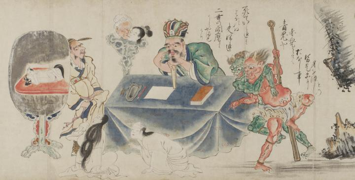

死後も離れようとしない夫婦の幽霊を、偽の閻魔大王が審判する場面。大きな鏡には生前の夫婦の情交が映し出されている。その様子を、2匹の鬼や閻魔の眷属たちが見ている。
出典：親書誌：U426_nichibunken_0058：地獄草紙絵巻；ジゴクゾウシエマキ／日付：2006／資源識別子：U426_nichibunken_0058_0002_0000
Copyright (c)2010- International Research Center for Japanese Studies, Kyoto, Japan. All rights reserved.